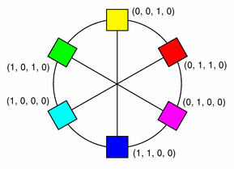
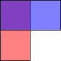

QColor Class
The QColor class provides colors based on RGB, HSV or CMYK values. More...
| Header: | #include <QColor> |
| CMake: | find_package(Qt6 REQUIRED COMPONENTS Gui) target_link_libraries(mytarget PRIVATE Qt6::Gui) |
| qmake: | QT += gui |
- List of all members, including inherited members
- Deprecated members
- QColor is part of Painting Classes.
Public Types
| enum | NameFormat { HexRgb, HexArgb } |
| enum | Spec { Rgb, Hsv, Cmyk, Hsl, ExtendedRgb, Invalid } |
Public Functions
| QColor() | |
| QColor(Qt::GlobalColor color) | |
| QColor(int r, int g, int b, int a = 255) | |
| QColor(QRgb color) | |
| QColor(QRgba64 rgba64) | |
| QColor(const QString &name) | |
| QColor(const char *name) | |
| QColor(QLatin1StringView name) | |
| int | alpha() const |
| float | alphaF() const |
| int | black() const |
| float | blackF() const |
| int | blue() const |
| float | blueF() const |
| QColor | convertTo(QColor::Spec colorSpec) const |
| int | cyan() const |
| float | cyanF() const |
| QColor | darker(int factor = 200) const |
| void | getCmyk(int *c, int *m, int *y, int *k, int *a = nullptr) const |
| void | getCmykF(float *c, float *m, float *y, float *k, float *a = nullptr) const |
| void | getHsl(int *h, int *s, int *l, int *a = nullptr) const |
| void | getHslF(float *h, float *s, float *l, float *a = nullptr) const |
| void | getHsv(int *h, int *s, int *v, int *a = nullptr) const |
| void | getHsvF(float *h, float *s, float *v, float *a = nullptr) const |
| void | getRgb(int *r, int *g, int *b, int *a = nullptr) const |
| void | getRgbF(float *r, float *g, float *b, float *a = nullptr) const |
| int | green() const |
| float | greenF() const |
| int | hslHue() const |
| float | hslHueF() const |
| int | hslSaturation() const |
| float | hslSaturationF() const |
| int | hsvHue() const |
| float | hsvHueF() const |
| int | hsvSaturation() const |
| float | hsvSaturationF() const |
| int | hue() const |
| float | hueF() const |
| bool | isValid() const |
| QColor | lighter(int factor = 150) const |
| int | lightness() const |
| float | lightnessF() const |
| int | magenta() const |
| float | magentaF() const |
| QString | name(QColor::NameFormat format = HexRgb) const |
| int | red() const |
| float | redF() const |
| QRgb | rgb() const |
| QRgba64 | rgba64() const |
| QRgb | rgba() const |
| int | saturation() const |
| float | saturationF() const |
| void | setAlpha(int alpha) |
| void | setAlphaF(float alpha) |
| void | setBlue(int blue) |
| void | setBlueF(float blue) |
| void | setCmyk(int c, int m, int y, int k, int a = 255) |
| void | setCmykF(float c, float m, float y, float k, float a = 1.0) |
| void | setGreen(int green) |
| void | setGreenF(float green) |
| void | setHsl(int h, int s, int l, int a = 255) |
| void | setHslF(float h, float s, float l, float a = 1.0) |
| void | setHsv(int h, int s, int v, int a = 255) |
| void | setHsvF(float h, float s, float v, float a = 1.0) |
| void | setRed(int red) |
| void | setRedF(float red) |
| void | setRgb(int r, int g, int b, int a = 255) |
| void | setRgb(QRgb rgb) |
| void | setRgba64(QRgba64 rgba) |
| void | setRgbF(float r, float g, float b, float a = 1.0) |
| void | setRgba(QRgb rgba) |
| QColor::Spec | spec() const |
| QColor | toCmyk() const |
| QColor | toExtendedRgb() const |
| QColor | toHsl() const |
| QColor | toHsv() const |
| QColor | toRgb() const |
| int | value() const |
| float | valueF() const |
| int | yellow() const |
| float | yellowF() const |
| QVariant | operator QVariant() const |
| bool | operator!=(const QColor &color) const |
| QColor & | operator=(Qt::GlobalColor color) |
| bool | operator==(const QColor &color) const |
Static Public Members
| QStringList | colorNames() |
| QColor | fromCmyk(int c, int m, int y, int k, int a = 255) |
| QColor | fromCmykF(float c, float m, float y, float k, float a = 1.0) |
| QColor | fromHsl(int h, int s, int l, int a = 255) |
| QColor | fromHslF(float h, float s, float l, float a = 1.0) |
| QColor | fromHsv(int h, int s, int v, int a = 255) |
| QColor | fromHsvF(float h, float s, float v, float a = 1.0) |
| QColor | fromRgb(QRgb rgb) |
| QColor | fromRgb(int r, int g, int b, int a = 255) |
| QColor | fromRgba64(ushort r, ushort g, ushort b, ushort a = USHRT_MAX) |
| QColor | fromRgba64(QRgba64 rgba64) |
| QColor | fromRgbF(float r, float g, float b, float a = 1.0) |
| QColor | fromRgba(QRgb rgba) |
(since 6.4) QColor | fromString(QAnyStringView name) |
(since 6.4) bool | isValidColorName(QAnyStringView name) |
Related Non-Members
| QRgb | |
| int | qAlpha(QRgb rgba) |
| uint | qAlpha(QRgba64 rgba64) |
| int | qBlue(QRgb rgb) |
| uint | qBlue(QRgba64 rgba64) |
| int | qGray(int r, int g, int b) |
| int | qGray(QRgb rgb) |
| int | qGreen(QRgb rgb) |
| uint | qGreen(QRgba64 rgba64) |
| QRgb | qPremultiply(QRgb rgb) |
| QRgba64 | qPremultiply(QRgba64 rgba64) |
| int | qRed(QRgb rgb) |
| uint | qRed(QRgba64 rgba64) |
| QRgb | qRgb(int r, int g, int b) |
| QRgba64 | qRgba64(quint16 r, quint16 g, quint16 b, quint16 a) |
| QRgba64 | qRgba64(quint64 c) |
| QRgb | qRgba(int r, int g, int b, int a) |
| QRgb | qUnpremultiply(QRgb rgb) |
| QRgba64 | qUnpremultiply(QRgba64 rgba64) |
| QDataStream & | operator<<(QDataStream &stream, const QColor &color) |
| QDataStream & | operator>>(QDataStream &stream, QColor &color) |
Detailed Description
A color is normally specified in terms of RGB (red, green, and blue) components, but it is also possible to specify it in terms of HSV (hue, saturation, and value) and CMYK (cyan, magenta, yellow and black) components. In addition a color can be specified using a color name. The color name can be any of the SVG 1.0 color names.
| RGB | HSV | CMYK |
|---|---|---|
 |  |  |
The QColor constructor creates the color based on RGB values. To create a QColor based on either HSV or CMYK values, use the toHsv() and toCmyk() functions respectively. These functions return a copy of the color using the desired format. In addition the static fromRgb(), fromHsv() and fromCmyk() functions create colors from the specified values. Alternatively, a color can be converted to any of the three formats using the convertTo() function (returning a copy of the color in the desired format), or any of the setRgb(), setHsv() and setCmyk() functions altering this color's format. The spec() function tells how the color was specified.
A color can be set by passing an RGB string (such as "#112233"), or an ARGB string (such as "#ff112233") or a color name (such as "blue"), to the fromString() function. The color names are taken from the SVG 1.0 color names. The name() function returns the name of the color in the format "#RRGGBB". Colors can also be set using setRgb(), setHsv() and setCmyk(). To get a lighter or darker color use the lighter() and darker() functions respectively.
The isValid() function indicates whether a QColor is legal at all. For example, a RGB color with RGB values out of range is illegal. For performance reasons, QColor mostly disregards illegal colors, and for that reason, the result of using an invalid color is undefined.
The color components can be retrieved individually, e.g with red(), hue() and cyan(). The values of the color components can also be retrieved in one go using the getRgb(), getHsv() and getCmyk() functions. Using the RGB color model, the color components can in addition be accessed with rgb().
There are several related non-members: QRgb is a typdef for an unsigned int representing the RGB value triplet (r, g, b). Note that it also can hold a value for the alpha-channel (for more information, see the Alpha-Blended Drawing section). The qRed(), qBlue() and qGreen() functions return the respective component of the given QRgb value, while the qRgb() and qRgba() functions create and return the QRgb triplet based on the given component values. Finally, the qAlpha() function returns the alpha component of the provided QRgb, and the qGray() function calculates and return a gray value based on the given value.
QColor is platform and device independent. The QColormap class maps the color to the hardware.
For more information about painting in general, see the Paint System documentation.
Integer vs. Floating Point Precision
QColor supports floating point precision and provides floating point versions of all the color components functions, e.g. getRgbF(), hueF() and fromCmykF(). Note that since the components are stored using 16-bit integers, there might be minor deviations between the values set using, for example, setRgbF() and the values returned by the getRgbF() function due to rounding.
While the integer based functions take values in the range 0-255 (except hue() which must have values within the range 0-359), the floating point functions accept values in the range 0.0 - 1.0.
Alpha-Blended Drawing
QColor also support alpha-blended outlining and filling. The alpha channel of a color specifies the transparency effect, 0 represents a fully transparent color, while 255 represents a fully opaque color. For example:
// Specify semi-transparent red painter.setBrush(QColor(255, 0, 0, 127)); painter.drawRect(0, 0, width() / 2, height()); // Specify semi-transparent blue painter.setBrush(QColor(0, 0, 255, 127)); painter.drawRect(0, 0, width(), height() / 2);
The code above produces the following output:

The alpha channel of a color can be retrieved and set using the alpha() and setAlpha() functions if its value is an integer, and alphaF() and setAlphaF() if its value is float. By default, the alpha-channel is set to 255 (opaque). To retrieve and set all the RGB color components (including the alpha-channel) in one go, use the rgba() and setRgba() functions.
Predefined Colors
There are 20 predefined QColor objects in the QColorConstants namespace, including black, white, primary and secondary colors, darker versions of these colors, and three shades of gray. Furthermore, the QColorConstants::Svg namespace defines QColor objects for the standard SVG color keyword names.

The QColorConstants::Color0, QColorConstants::Color1 and QColorConstants::Transparent colors are used for special purposes.
QColorConstants::Color0 (zero pixel value) and QColorConstants::Color1 (non-zero pixel value) are special colors for drawing in QBitmaps. Painting with QColorConstants::Color0 sets the bitmap bits to 0 (transparent; i.e., background), and painting with c{QColorConstants::Color1} sets the bits to 1 (opaque; i.e., foreground).
QColorConstants::Transparent is used to indicate a transparent pixel. When painting with this value, a pixel value will be used that is appropriate for the underlying pixel format in use.
For historical reasons, the 20 predefined colors are also available in the Qt::GlobalColor enumeration.
Finally, QColor recognizes a variety of color names (as strings); the static colorNames() function returns a QStringList color names that QColor knows about.
The Extended RGB Color Model
The extended RGB color model, also known as the scRGB color space, is the same the RGB color model except it allows values under 0.0, and over 1.0. This makes it possible to represent colors that would otherwise be outside the range of the RGB colorspace but still use the same values for colors inside the RGB colorspace.
The HSV Color Model
The RGB model is hardware-oriented. Its representation is close to what most monitors show. In contrast, HSV represents color in a way more suited to the human perception of color. For example, the relationships "stronger than", "darker than", and "the opposite of" are easily expressed in HSV but are much harder to express in RGB.
HSV, like RGB, has three components:
- H, for hue, is in the range 0 to 359 if the color is chromatic (not gray), or meaningless if it is gray. It represents degrees on the color wheel familiar to most people. Red is 0 (degrees), green is 120, and blue is 240.

- S, for saturation, is in the range 0 to 255, and the bigger it is, the stronger the color is. Grayish colors have saturation near 0; very strong colors have saturation near 255.
- V, for value, is in the range 0 to 255 and represents lightness or brightness of the color. 0 is black; 255 is as far from black as possible.
Here are some examples: pure red is H=0, S=255, V=255; a dark red, moving slightly towards the magenta, could be H=350 (equivalent to -10), S=255, V=180; a grayish light red could have H about 0 (say 350-359 or 0-10), S about 50-100, and S=255.
Qt returns a hue value of -1 for achromatic colors. If you pass a hue value that is too large, Qt forces it into range. Hue 360 or 720 is treated as 0; hue 540 is treated as 180.
In addition to the standard HSV model, Qt provides an alpha-channel to feature alpha-blended drawing.
The HSL Color Model
HSL is similar to HSV, however instead of the Value parameter, HSL specifies a Lightness parameter which maps somewhat differently to the brightness of the color.
Similarly, the HSL saturation value is not in general the same as the HSV saturation value for the same color. hslSaturation() provides the color's HSL saturation value, while saturation() and hsvSaturation() provides the HSV saturation value.
The hue value is defined to be the same in HSL and HSV.
The CMYK Color Model
While the RGB and HSV color models are used for display on computer monitors, the CMYK model is used in the four-color printing process of printing presses and some hard-copy devices.
CMYK has four components, all in the range 0-255: cyan (C), magenta (M), yellow (Y) and black (K). Cyan, magenta and yellow are called subtractive colors; the CMYK color model creates color by starting with a white surface and then subtracting color by applying the appropriate components. While combining cyan, magenta and yellow gives the color black, subtracting one or more will yield any other color. When combined in various percentages, these three colors can create the entire spectrum of colors.
Mixing 100 percent of cyan, magenta and yellow does produce black, but the result is unsatisfactory since it wastes ink, increases drying time, and gives a muddy colour when printing. For that reason, black is added in professional printing to provide a solid black tone; hence the term 'four color process'.
In addition to the standard CMYK model, Qt provides an alpha-channel to feature alpha-blended drawing.
See also QPalette, QBrush, and QColorConstants.
Member Type Documentation
enum QColor::NameFormat
How to format the output of the name() function
| Constant | Value | Description |
|---|---|---|
QColor::HexRgb | 0 | #RRGGBB A "#" character followed by three two-digit hexadecimal numbers (i.e. #RRGGBB). |
QColor::HexArgb | 1 | #AARRGGBB A "#" character followed by four two-digit hexadecimal numbers (i.e. #AARRGGBB). |
See also name().
enum QColor::Spec
The type of color specified, either RGB, extended RGB, HSV, CMYK or HSL.
| Constant | Value |
|---|---|
QColor::Rgb | 1 |
QColor::Hsv | 2 |
QColor::Cmyk | 3 |
QColor::Hsl | 4 |
QColor::ExtendedRgb | 5 |
QColor::Invalid | 0 |
Member Function Documentation
[constexpr noexcept] QColor::QColor()
Constructs an invalid color with the RGB value (0, 0, 0). An invalid color is a color that is not properly set up for the underlying window system.
The alpha value of an invalid color is unspecified.
See also isValid().
[noexcept] QColor::QColor(Qt::GlobalColor color)
This is an overloaded function.
Constructs a new color with a color value of color.
See also isValid() and Predefined Colors.
[constexpr noexcept] QColor::QColor(int r, int g, int b, int a = 255)
Constructs a color with the RGB value r, g, b, and the alpha-channel (transparency) value of a.
The color is left invalid if any of the arguments are invalid.
See also setRgba() and isValid().
[noexcept] QColor::QColor(QRgb color)
Constructs a color with the value color. The alpha component is ignored and set to solid.
See also fromRgb() and isValid().
[noexcept] QColor::QColor(QRgba64 rgba64)
Constructs a color with the value rgba64.
See also fromRgba64().
QColor::QColor(const QString &name)
Constructs a named color in the same way as setNamedColor() using the given name.
The color is left invalid if the name cannot be parsed.
See also setNamedColor(), name(), and isValid().
QColor::QColor(const char *name)
Constructs a named color in the same way as setNamedColor() using the given name.
This is an overloaded function.
See also setNamedColor(), name(), and isValid().
QColor::QColor(QLatin1StringView name)
Constructs a named color in the same way as setNamedColor() using the given name.
This is an overloaded function.
See also setNamedColor(), name(), and isValid().
[noexcept] int QColor::alpha() const
Returns the alpha color component of this color.
See also setAlpha(), alphaF(), and Alpha-Blended Drawing.
[noexcept] float QColor::alphaF() const
Returns the alpha color component of this color.
See also setAlphaF(), alpha(), and Alpha-Blended Drawing.
[noexcept] int QColor::black() const
Returns the black color component of this color.
See also blackF(), getCmyk(), and The CMYK Color Model.
[noexcept] float QColor::blackF() const
Returns the black color component of this color.
See also black(), getCmykF(), and The CMYK Color Model.
[noexcept] int QColor::blue() const
Returns the blue color component of this color.
See also setBlue(), blueF(), and getRgb().
[noexcept] float QColor::blueF() const
Returns the blue color component of this color.
See also setBlueF(), blue(), and getRgbF().
[static] QStringList QColor::colorNames()
Returns a QStringList containing the color names Qt knows about.
See also Predefined Colors.
[noexcept] QColor QColor::convertTo(QColor::Spec colorSpec) const
Creates a copy of this color in the format specified by colorSpec.
See also spec(), toCmyk(), toHsv(), toRgb(), and isValid().
[noexcept] int QColor::cyan() const
Returns the cyan color component of this color.
See also cyanF(), getCmyk(), and The CMYK Color Model.
[noexcept] float QColor::cyanF() const
Returns the cyan color component of this color.
See also cyan(), getCmykF(), and The CMYK Color Model.
[noexcept] QColor QColor::darker(int factor = 200) const
Returns a darker (or lighter) color, but does not change this object.
If the factor is greater than 100, this functions returns a darker color. Setting factor to 300 returns a color that has one-third the brightness. If the factor is less than 100, the return color is lighter, but we recommend using the lighter() function for this purpose. If the factor is 0 or negative, the return value is unspecified.
The function converts the current color to HSV, divides the value (V) component by factor and converts the color back to it's original color spec.
See also lighter() and isValid().
[static] QColor QColor::fromCmyk(int c, int m, int y, int k, int a = 255)
Static convenience function that returns a QColor constructed from the given CMYK color values: c (cyan), m (magenta), y (yellow), k (black), and a (alpha-channel, i.e. transparency).
All the values must be in the range 0-255.
See also toCmyk(), fromCmykF(), isValid(), and The CMYK Color Model.
[static] QColor QColor::fromCmykF(float c, float m, float y, float k, float a = 1.0)
This is an overloaded function.
Static convenience function that returns a QColor constructed from the given CMYK color values: c (cyan), m (magenta), y (yellow), k (black), and a (alpha-channel, i.e. transparency).
All the values must be in the range 0.0-1.0.
See also toCmyk(), fromCmyk(), isValid(), and The CMYK Color Model.
[static] QColor QColor::fromHsl(int h, int s, int l, int a = 255)
Static convenience function that returns a QColor constructed from the HSV color values, h (hue), s (saturation), l (lightness), and a (alpha-channel, i.e. transparency).
The value of s, l, and a must all be in the range 0-255; the value of h must be in the range 0-359.
See also toHsl(), fromHslF(), isValid(), and The HSL Color Model.
[static] QColor QColor::fromHslF(float h, float s, float l, float a = 1.0)
This is an overloaded function.
Static convenience function that returns a QColor constructed from the HSV color values, h (hue), s (saturation), l (lightness), and a (alpha-channel, i.e. transparency).
All the values must be in the range 0.0-1.0.
See also toHsl(), fromHsl(), isValid(), and The HSL Color Model.
[static] QColor QColor::fromHsv(int h, int s, int v, int a = 255)
Static convenience function that returns a QColor constructed from the HSV color values, h (hue), s (saturation), v (value), and a (alpha-channel, i.e. transparency).
The value of s, v, and a must all be in the range 0-255; the value of h must be in the range 0-359.
See also toHsv(), fromHsvF(), isValid(), and The HSV Color Model.
[static] QColor QColor::fromHsvF(float h, float s, float v, float a = 1.0)
This is an overloaded function.
Static convenience function that returns a QColor constructed from the HSV color values, h (hue), s (saturation), v (value), and a (alpha-channel, i.e. transparency).
All the values must be in the range 0.0-1.0.
See also toHsv(), fromHsv(), isValid(), and The HSV Color Model.
[static noexcept] QColor QColor::fromRgb(QRgb rgb)
Static convenience function that returns a QColor constructed from the given QRgb value rgb.
The alpha component of rgb is ignored (i.e. it is automatically set to 255), use the fromRgba() function to include the alpha-channel specified by the given QRgb value.
See also fromRgba(), fromRgbF(), toRgb(), and isValid().
[static] QColor QColor::fromRgb(int r, int g, int b, int a = 255)
Static convenience function that returns a QColor constructed from the RGB color values, r (red), g (green), b (blue), and a (alpha-channel, i.e. transparency).
All the values must be in the range 0-255.
See also toRgb(), fromRgba64(), fromRgbF(), and isValid().
[static noexcept] QColor QColor::fromRgba64(ushort r, ushort g, ushort b, ushort a = USHRT_MAX)
Static convenience function that returns a QColor constructed from the RGBA64 color values, r (red), g (green), b (blue), and a (alpha-channel, i.e. transparency).
See also fromRgb(), fromRgbF(), toRgb(), and isValid().
[static noexcept] QColor QColor::fromRgba64(QRgba64 rgba64)
Static convenience function that returns a QColor constructed from the given QRgba64 value rgba64.
See also fromRgb(), fromRgbF(), toRgb(), and isValid().
[static] QColor QColor::fromRgbF(float r, float g, float b, float a = 1.0)
Static convenience function that returns a QColor constructed from the RGB color values, r (red), g (green), b (blue), and a (alpha-channel, i.e. transparency).
The alpha value must be in the range 0.0-1.0. If any of the other values are outside the range of 0.0-1.0 the color model will be set as ExtendedRgb.
See also fromRgb(), fromRgba64(), toRgb(), and isValid().
[static noexcept] QColor QColor::fromRgba(QRgb rgba)
Static convenience function that returns a QColor constructed from the given QRgb value rgba.
Unlike the fromRgb() function, the alpha-channel specified by the given QRgb value is included.
See also fromRgb(), fromRgba64(), and isValid().
[static noexcept, since 6.4] QColor QColor::fromString(QAnyStringView name)
Returns an RGB QColor parsed from name, which may be in one of these formats:
- #RGB (each of R, G, and B is a single hex digit)
- #RRGGBB
- #AARRGGBB (Since 5.2)
- #RRRGGGBBB
- #RRRRGGGGBBBB
- A name from the list of colors defined in the list of SVG color keyword names provided by the World Wide Web Consortium; for example, "steelblue" or "gainsboro". These color names work on all platforms. Note that these color names are not the same as defined by the Qt::GlobalColor enums, e.g. "green" and Qt::green does not refer to the same color.
transparent- representing the absence of a color.
Returns an invalid color if name cannot be parsed.
This function was introduced in Qt 6.4.
See also isValidColorName().
void QColor::getCmyk(int *c, int *m, int *y, int *k, int *a = nullptr) const
Sets the contents pointed to by c, m, y, k, and a, to the cyan, magenta, yellow, black, and alpha-channel (transparency) components of the color's CMYK value.
These components can be retrieved individually using the cyan(), magenta(), yellow(), black() and alpha() functions.
See also setCmyk() and The CMYK Color Model.
void QColor::getCmykF(float *c, float *m, float *y, float *k, float *a = nullptr) const
Sets the contents pointed to by c, m, y, k, and a, to the cyan, magenta, yellow, black, and alpha-channel (transparency) components of the color's CMYK value.
These components can be retrieved individually using the cyanF(), magentaF(), yellowF(), blackF() and alphaF() functions.
See also setCmykF() and The CMYK Color Model.
void QColor::getHsl(int *h, int *s, int *l, int *a = nullptr) const
Sets the contents pointed to by h, s, l, and a, to the hue, saturation, lightness, and alpha-channel (transparency) components of the color's HSL value.
These components can be retrieved individually using the hslHue(), hslSaturation(), lightness() and alpha() functions.
See also getHslF(), setHsl(), and The HSL Color Model.
void QColor::getHslF(float *h, float *s, float *l, float *a = nullptr) const
Sets the contents pointed to by h, s, l, and a, to the hue, saturation, lightness, and alpha-channel (transparency) components of the color's HSL value.
These components can be retrieved individually using the hslHueF(), hslSaturationF(), lightnessF() and alphaF() functions.
See also getHsl(), setHslF(), and The HSL Color Model.
void QColor::getHsv(int *h, int *s, int *v, int *a = nullptr) const
Sets the contents pointed to by h, s, v, and a, to the hue, saturation, value, and alpha-channel (transparency) components of the color's HSV value.
These components can be retrieved individually using the hue(), saturation(), value() and alpha() functions.
See also setHsv() and The HSV Color Model.
void QColor::getHsvF(float *h, float *s, float *v, float *a = nullptr) const
Sets the contents pointed to by h, s, v, and a, to the hue, saturation, value, and alpha-channel (transparency) components of the color's HSV value.
These components can be retrieved individually using the hueF(), saturationF(), valueF() and alphaF() functions.
See also setHsv() and The HSV Color Model.
void QColor::getRgb(int *r, int *g, int *b, int *a = nullptr) const
Sets the contents pointed to by r, g, b, and a, to the red, green, blue, and alpha-channel (transparency) components of the color's RGB value.
These components can be retrieved individually using the red(), green(), blue() and alpha() functions.
void QColor::getRgbF(float *r, float *g, float *b, float *a = nullptr) const
Sets the contents pointed to by r, g, b, and a, to the red, green, blue, and alpha-channel (transparency) components of the color's RGB value.
These components can be retrieved individually using the redF(), greenF(), blueF() and alphaF() functions.
[noexcept] int QColor::green() const
Returns the green color component of this color.
See also setGreen(), greenF(), and getRgb().
[noexcept] float QColor::greenF() const
Returns the green color component of this color.
See also setGreenF(), green(), and getRgbF().
[noexcept] int QColor::hslHue() const
Returns the HSL hue color component of this color.
See also hslHueF(), hsvHue(), getHsl(), and The HSL Color Model.
[noexcept] float QColor::hslHueF() const
Returns the HSL hue color component of this color.
See also hslHue(), hsvHueF(), and getHslF().
[noexcept] int QColor::hslSaturation() const
Returns the HSL saturation color component of this color.
See also hslSaturationF(), hsvSaturation(), getHsl(), and The HSL Color Model.
[noexcept] float QColor::hslSaturationF() const
Returns the HSL saturation color component of this color.
See also hslSaturation(), hsvSaturationF(), getHslF(), and The HSL Color Model.
[noexcept] int QColor::hsvHue() const
Returns the HSV hue color component of this color.
See also hueF(), hslHue(), getHsv(), and The HSV Color Model.
[noexcept] float QColor::hsvHueF() const
Returns the hue color component of this color.
See also hue(), hslHueF(), getHsvF(), and The HSV Color Model.
[noexcept] int QColor::hsvSaturation() const
Returns the HSV saturation color component of this color.
See also saturationF(), hslSaturation(), getHsv(), and The HSV Color Model.
[noexcept] float QColor::hsvSaturationF() const
Returns the HSV saturation color component of this color.
See also saturation(), hslSaturationF(), getHsvF(), and The HSV Color Model.
[noexcept] int QColor::hue() const
Returns the HSV hue color component of this color.
The color is implicitly converted to HSV.
See also hsvHue(), hslHue(), hueF(), getHsv(), and The HSV Color Model.
[noexcept] float QColor::hueF() const
Returns the HSV hue color component of this color.
The color is implicitly converted to HSV.
See also hsvHueF(), hslHueF(), hue(), getHsvF(), and The HSV Color Model.
[noexcept] bool QColor::isValid() const
Returns true if the color is valid; otherwise returns false.
[static noexcept, since 6.4] bool QColor::isValidColorName(QAnyStringView name)
Returns true if the name is a valid color name and can be used to construct a valid QColor object, otherwise returns false.
It uses the same algorithm used in fromString().
This function was introduced in Qt 6.4.
See also fromString().
[noexcept] QColor QColor::lighter(int factor = 150) const
Returns a lighter (or darker) color, but does not change this object.
If the factor is greater than 100, this functions returns a lighter color. Setting factor to 150 returns a color that is 50% brighter. If the factor is less than 100, the return color is darker, but we recommend using the darker() function for this purpose. If the factor is 0 or negative, the return value is unspecified.
The function converts the current color to HSV, multiplies the value (V) component by factor and converts the color back to it's original color spec.
See also darker() and isValid().
[noexcept] int QColor::lightness() const
Returns the lightness color component of this color.
See also lightnessF() and getHsl().
[noexcept] float QColor::lightnessF() const
Returns the lightness color component of this color.
See also value() and getHslF().
[noexcept] int QColor::magenta() const
Returns the magenta color component of this color.
See also magentaF(), getCmyk(), and The CMYK Color Model.
[noexcept] float QColor::magentaF() const
Returns the magenta color component of this color.
See also magenta(), getCmykF(), and The CMYK Color Model.
QString QColor::name(QColor::NameFormat format = HexRgb) const
Returns the name of the color in the specified format.
See also fromString() and NameFormat.
[noexcept] int QColor::red() const
Returns the red color component of this color.
See also setRed(), redF(), and getRgb().
[noexcept] float QColor::redF() const
Returns the red color component of this color.
See also setRedF(), red(), and getRgbF().
[noexcept] QRgb QColor::rgb() const
Returns the RGB value of the color. The alpha value is opaque.
See also setRgb(), getRgb(), and rgba().
[noexcept] QRgba64 QColor::rgba64() const
Returns the RGB64 value of the color, including its alpha.
For an invalid color, the alpha value of the returned color is unspecified.
See also setRgba64(), rgba(), and rgb().
[noexcept] QRgb QColor::rgba() const
Returns the RGB value of the color, including its alpha.
For an invalid color, the alpha value of the returned color is unspecified.
See also setRgba(), rgb(), and rgba64().
[noexcept] int QColor::saturation() const
Returns the HSV saturation color component of this color.
The color is implicitly converted to HSV.
See also hsvSaturation(), hslSaturation(), saturationF(), getHsv(), and The HSV Color Model.
[noexcept] float QColor::saturationF() const
Returns the HSV saturation color component of this color.
The color is implicitly converted to HSV.
See also hsvSaturationF(), hslSaturationF(), saturation(), getHsvF(), and The HSV Color Model.
void QColor::setAlpha(int alpha)
Sets the alpha of this color to alpha. Integer alpha is specified in the range 0-255.
See also alpha(), alphaF(), and Alpha-Blended Drawing.
void QColor::setAlphaF(float alpha)
Sets the alpha of this color to alpha. float alpha is specified in the range 0.0-1.0.
See also alphaF(), alpha(), and Alpha-Blended Drawing.
void QColor::setBlue(int blue)
Sets the blue color component of this color to blue. Integer components are specified in the range 0-255.
See also blue(), blueF(), and setRgb().
void QColor::setBlueF(float blue)
Sets the blue color component of this color to blue. If blue lies outside the 0.0-1.0 range, the color model will be changed to ExtendedRgb.
See also blueF(), blue(), and setRgbF().
void QColor::setCmyk(int c, int m, int y, int k, int a = 255)
Sets the color to CMYK values, c (cyan), m (magenta), y (yellow), k (black), and a (alpha-channel, i.e. transparency).
All the values must be in the range 0-255.
See also getCmyk(), setCmykF(), and The CMYK Color Model.
void QColor::setCmykF(float c, float m, float y, float k, float a = 1.0)
This is an overloaded function.
Sets the color to CMYK values, c (cyan), m (magenta), y (yellow), k (black), and a (alpha-channel, i.e. transparency).
All the values must be in the range 0.0-1.0.
See also getCmykF(), setCmyk(), and The CMYK Color Model.
void QColor::setGreen(int green)
Sets the green color component of this color to green. Integer components are specified in the range 0-255.
See also green(), greenF(), and setRgb().
void QColor::setGreenF(float green)
Sets the green color component of this color to green. If green lies outside the 0.0-1.0 range, the color model will be changed to ExtendedRgb.
See also greenF(), green(), and setRgbF().
void QColor::setHsl(int h, int s, int l, int a = 255)
Sets a HSL color value; h is the hue, s is the saturation, l is the lightness and a is the alpha component of the HSL color.
The saturation, value and alpha-channel values must be in the range 0-255, and the hue value must be greater than -1.
See also getHsl() and setHslF().
void QColor::setHslF(float h, float s, float l, float a = 1.0)
Sets a HSL color lightness; h is the hue, s is the saturation, l is the lightness and a is the alpha component of the HSL color.
All the values must be in the range 0.0-1.0.
See also getHslF() and setHsl().
void QColor::setHsv(int h, int s, int v, int a = 255)
Sets a HSV color value; h is the hue, s is the saturation, v is the value and a is the alpha component of the HSV color.
The saturation, value and alpha-channel values must be in the range 0-255, and the hue value must be greater than -1.
See also getHsv(), setHsvF(), and The HSV Color Model.
void QColor::setHsvF(float h, float s, float v, float a = 1.0)
Sets a HSV color value; h is the hue, s is the saturation, v is the value and a is the alpha component of the HSV color.
All the values must be in the range 0.0-1.0.
See also getHsvF(), setHsv(), and The HSV Color Model.
void QColor::setRed(int red)
Sets the red color component of this color to red. Integer components are specified in the range 0-255.
See also red(), redF(), and setRgb().
void QColor::setRedF(float red)
Sets the red color component of this color to red. If red lies outside the 0.0-1.0 range, the color model will be changed to ExtendedRgb.
See also redF(), red(), and setRgbF().
void QColor::setRgb(int r, int g, int b, int a = 255)
Sets the RGB value to r, g, b and the alpha value to a.
All the values must be in the range 0-255.
See also rgb(), getRgb(), and setRgbF().
[noexcept] void QColor::setRgb(QRgb rgb)
This is an overloaded function.
Sets the RGB value to rgb. The alpha value is set to opaque.
[noexcept] void QColor::setRgba64(QRgba64 rgba)
Sets the RGB64 value to rgba, including its alpha.
See also setRgba() and rgba64().
void QColor::setRgbF(float r, float g, float b, float a = 1.0)
Sets the color channels of this color to r (red), g (green), b (blue) and a (alpha, transparency).
The alpha value must be in the range 0.0-1.0. If any of the other values are outside the range of 0.0-1.0 the color model will be set as ExtendedRgb.
See also rgb(), getRgbF(), and setRgb().
[noexcept] void QColor::setRgba(QRgb rgba)
Sets the RGB value to rgba, including its alpha.
See also rgba(), rgb(), and setRgba64().
[noexcept] QColor::Spec QColor::spec() const
Returns how the color was specified.
See also Spec and convertTo().
[noexcept] QColor QColor::toCmyk() const
Creates and returns a CMYK QColor based on this color.
See also fromCmyk(), convertTo(), isValid(), and The CMYK Color Model.
[noexcept] QColor QColor::toExtendedRgb() const
Create and returns an extended RGB QColor based on this color.
See also toRgb and convertTo().
[noexcept] QColor QColor::toHsl() const
Creates and returns an HSL QColor based on this color.
See also fromHsl(), convertTo(), isValid(), and The HSL Color Model.
[noexcept] QColor QColor::toHsv() const
Creates and returns an HSV QColor based on this color.
See also fromHsv(), convertTo(), isValid(), and The HSV Color Model.
[noexcept] QColor QColor::toRgb() const
Create and returns an RGB QColor based on this color.
See also fromRgb(), convertTo(), and isValid().
[noexcept] int QColor::value() const
Returns the value color component of this color.
See also valueF(), getHsv(), and The HSV Color Model.
[noexcept] float QColor::valueF() const
Returns the value color component of this color.
See also value(), getHsvF(), and The HSV Color Model.
[noexcept] int QColor::yellow() const
Returns the yellow color component of this color.
See also yellowF(), getCmyk(), and The CMYK Color Model.
[noexcept] float QColor::yellowF() const
Returns the yellow color component of this color.
See also yellow(), getCmykF(), and The CMYK Color Model.
QVariant QColor::operator QVariant() const
Returns the color as a QVariant
[noexcept] bool QColor::operator!=(const QColor &color) const
Returns true if this color has different color specification or component values from color; otherwise returns false.
ExtendedRgb and Rgb specifications are considered matching in this context.
See also spec().
[noexcept] QColor &QColor::operator=(Qt::GlobalColor color)
This is an overloaded function.
Assigns a copy of color and returns a reference to this color.
[noexcept] bool QColor::operator==(const QColor &color) const
Returns true if this color has the same color specification and component values as color; otherwise returns false.
ExtendedRgb and Rgb specifications are considered matching in this context.
See also spec().
Related Non-Members
QRgb
An ARGB quadruplet on the format #AARRGGBB, equivalent to an unsigned int.
The type also holds a value for the alpha-channel. The default alpha channel is ff, i.e opaque. For more information, see the Alpha-Blended Drawing section.
Here are some examples of how QRgb values can be created:
const QRgb rgb1 = 0x88112233; const QRgb rgb2 = QColor("red").rgb(); const QRgb rgb3 = qRgb(qRed(rgb1), qGreen(rgb2), qBlue(rgb2)); const QRgb rgb4 = qRgba(qRed(rgb1), qGreen(rgb2), qBlue(rgb2), qAlpha(rgb1));
See also qRgb(), qRgba(), QColor::rgb(), and QColor::rgba().
[constexpr] int qAlpha(QRgb rgba)
Returns the alpha component of the ARGB quadruplet rgba.
See also qRgb() and QColor::alpha().
[constexpr] uint qAlpha(QRgba64 rgba64)
Returns the alpha component of rgba64 as an 8-bit value.
See also QRgba64::alpha8() and QColor::alpha().
[constexpr] int qBlue(QRgb rgb)
Returns the blue component of the ARGB quadruplet rgb.
See also qRgb() and QColor::blue().
[constexpr] uint qBlue(QRgba64 rgba64)
Returns the blue component of rgba64 as an 8-bit value.
See also QRgba64::blue8() and QColor::blue().
[constexpr] int qGray(int r, int g, int b)
Returns a gray value (0 to 255) from the (r, g, b) triplet.
The gray value is calculated using the formula (r * 11 + g * 16 + b * 5)/32.
[constexpr] int qGray(QRgb rgb)
This is an overloaded function.
Returns a gray value (0 to 255) from the given ARGB quadruplet rgb.
The gray value is calculated using the formula (R * 11 + G * 16 + B * 5)/32; the alpha-channel is ignored.
[constexpr] int qGreen(QRgb rgb)
Returns the green component of the ARGB quadruplet rgb.
See also qRgb() and QColor::green().
[constexpr] uint qGreen(QRgba64 rgba64)
Returns the green component of rgba64 as an 8-bit value.
See also QRgba64::green8() and QColor::green().
[constexpr] QRgb qPremultiply(QRgb rgb)
Converts an unpremultiplied ARGB quadruplet rgb into a premultiplied ARGB quadruplet.
See also qUnpremultiply().
[constexpr] QRgba64 qPremultiply(QRgba64 rgba64)
Converts an unpremultiplied QRgba64 quadruplet rgba64 into a premultiplied QRgba64 quadruplet.
See also QRgba64::premultiplied() and qUnpremultiply().
[constexpr] int qRed(QRgb rgb)
Returns the red component of the ARGB quadruplet rgb.
See also qRgb() and QColor::red().
[constexpr] uint qRed(QRgba64 rgba64)
Returns the red component of rgba64 as an 8-bit value.
See also QRgba64::red8() and QColor::red().
[constexpr] QRgb qRgb(int r, int g, int b)
Returns the ARGB quadruplet (255, r, g, b).
See also qRgba(), qRed(), qGreen(), qBlue(), and qAlpha().
[constexpr] QRgba64 qRgba64(quint16 r, quint16 g, quint16 b, quint16 a)
Returns the QRgba64 quadruplet (r, g, b, a).
See also qRgba().
[constexpr] QRgba64 qRgba64(quint64 c)
Returns c as a QRgba64 struct.
See also qRgba().
[constexpr] QRgb qRgba(int r, int g, int b, int a)
Returns the ARGB quadruplet (a, r, g, b).
See also qRgb(), qRed(), qGreen(), qBlue(), and qAlpha().
QRgb qUnpremultiply(QRgb rgb)
Converts a premultiplied ARGB quadruplet rgb into an unpremultiplied ARGB quadruplet.
See also qPremultiply().
[constexpr] QRgba64 qUnpremultiply(QRgba64 rgba64)
Converts a premultiplied QRgba64 quadruplet rgba64 into an unpremultiplied QRgba64 quadruplet.
See also QRgba64::unpremultiplied() and qPremultiply().
QDataStream &operator<<(QDataStream &stream, const QColor &color)
Writes the color to the stream.
See also Serializing Qt Data Types.
QDataStream &operator>>(QDataStream &stream, QColor &color)
Reads the color from the stream.
See also Serializing Qt Data Types.